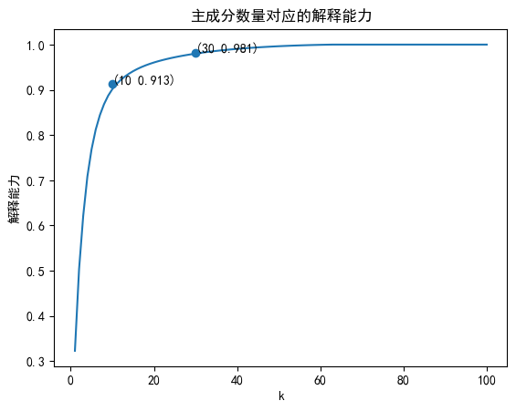
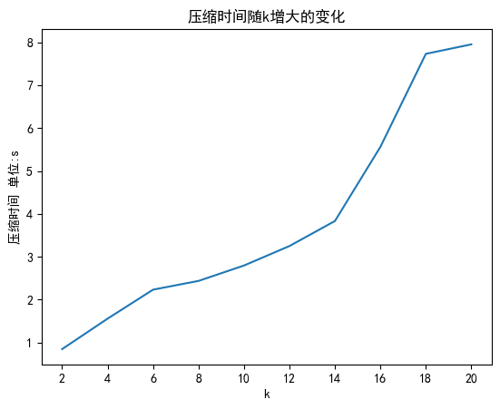
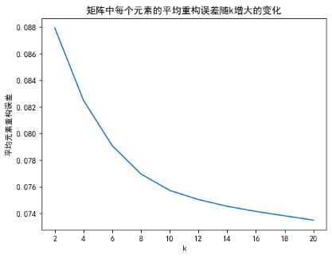
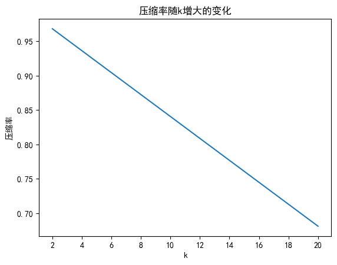

PCA图像压缩
PCA图像压缩
lvzhipin 当我们处理图像时，经常需要将其进行压缩以便于存储和传输。一种流行的方法是使用主成分分析（PCA）进行图像压缩。PCA是一种线性变换方法，可以将高维数据转化为低维度表示，同时保留大部分原始信息。
本项目将介绍基于SVD分解的PCA算法以及其对 256×256 彩色图像进行压缩的效果与性能（重构误差，呀压缩时间，压缩率）。
本次实验采用的步骤主要是基于课本上的步骤（与某些版本的求解方案有所区别）。在课本上，矩阵的行为特征数，列为样本数，这一点主要与协方差矩阵的求解方式有关，但是两种方式最终的结果都是正确的。
二、 问题定义（提供问题定义的语言描述与数学形式）输入：$M_{256×256×3}$
输出：$C（压缩后的矩阵），P（投影矩阵）$
算法流程：
$M’_{3072×64} = M.reshape(3072, 64)$
$C, P = PCA(M’)$
通过$C_{k×64},P_{3072×k}$可以计算出重构矩阵$R’ = PC$，通过还原矩阵的形状可以得到RGB图像矩阵$R = R’.reshape(256,256,3)$，利用该矩阵可以展示压缩后的图像，计算重构误差等。
基于SVD分解的PCA算法实现步骤：
数据预处理
数据预处理分为两步，首先将矩阵从(256, 256, 3)维度转化为(3072, 64)，此时我将每一列作为一个样本，即共64个样本，每个样本向量的大小为3072维。然后我对样本进行去中心化操作，即令每个向量的每个元素减去其在该维度上所有样本的均值。
在实验时，我发现PCA重构出的RGB矩阵中有许多负数。如果我将所有的负数都变为0，虽然能看到一些图像特征，但是整体图像偏暗，效果不好。所以我在去中心化之前，我将对图像矩阵进行归一化处理，即让每一个元素都减去矩阵中所有元素的均值。在PCA结果出来之后，我再令重构后的矩阵加上这个均值，这样我得出的矩阵含有的负数大量降低。
以下为某次实验两种方式矩阵所含负数元素数量：
| 未归一化处理 | 归一化处理 |
|---|---|
| 92429 | 117 |
下图为选取相同主成分数量时两种方式压缩效果对比（前者为未归一化处理，后者为归一化处理）：
求协方差矩阵
由于已经对样本进行过去中心化操作，所以在求协方差矩阵时，只需要令原矩阵点乘其转置，然后除以m(样本数) - 1。
对协方差矩阵进行奇异值分解
由于只需要使用左奇异向量，我直接使用幂法和降阶技术求出$covariance_matrix^T \cdot covariance_matrix$最大的K个特征值，并将对应的特征向量组成的矩阵$U$作为投影矩阵$P$。压缩矩阵$C = P^T \cdot M’$。
矩阵重构
计算得出重构矩阵$R’_{3072×64} = P \cdot C$，然后得到重构后的图像矩阵$R_{256×256×3} = R’.reshape$，利用该矩阵进行展示和评估。
以下是实现的重要函数：
1 | def power_method(u, matrix, tol=1e-4): |
1 | def eig(matrix, k=20): |
1 | def PCA(input_matrix, k=10): |
下面我将用可视化图像的方式分析数据集的特征以及基于SVD的PCA算法的性能和效果：
主成分数量的选取：
下图是不同主成分数量对整个图像的平均解释能力（选取的奇异值之和占奇异值的总和的比重）的折线图
 从图中可以看出，本实验中大部分的奇异值都接近于0，只有少数奇异值对整个图像的特征起决定性作用。在主成分数量达到10时，其解释能力就已经达到了90%。在奇异值数量达到40时，解释能力达到了99%。
平均压缩时间：
下图是主成分数量从1到100时，压缩每张图片平均所用的时间
 可以看到随k的增大，单站图片的平均压缩时间逐渐增大。这主要因为k增大时，用幂法求解的特征值数量增多，循环次数增多，时间就会变长。在k=10时，平均一张图片的压缩时间为2.8s。
重构误差：
本实验使用压缩前和重构后的两个矩阵的欧几里得距离作为重构误差的度量。矩阵的总元素数量有 $256×256×3 = 196608$，为了将变化展示的更加清晰，也为了了解平均每个元素的差异，所以下图的Y轴代表平均每个元素的重构误差（即总重构误差除以元素数量）。
 可以看到随k的增大，重构误差逐渐减小，并且图像减小的越来越慢。在k=10之后，重构误差减小的比较缓慢。
压缩率：
本实验对每一张图片单独进行压缩，即每一张图片都对应一个压缩后的矩阵和一个投影矩阵。由于在重构图像时需要用到投影矩阵，所以两者都需要储存。
压缩率公式如下：

可以看到随k的增大，压缩率呈线性减小。
实际应用效果：
综合上述实验结果，并对压缩率、压缩时间、重构误差的综合考虑，本实验最终选择k=10个主成分对图像进行压缩。以下是以第1张和第50张图片为例，展示实际的压缩效果。
第1张图片压缩效果：
| 压缩时间 | 压缩率 | 元素平均重构误差 |
|---|---|---|
| 2.86s | 0.84 | 0.064 |
第50张图片压缩效果：
| 压缩时间 | 压缩率 | 元素平均重构误差 |
|---|---|---|
| 3.02s | 0.84 | 0.076 |
可以看到在k=10时，重构的图片已经达到了一定的清晰度，并且压缩率和压缩时间也达到了比较好的水平。
但是存在一个问题：图片在压缩后呈片状，能看到明显的竖线将整张图片分割成几部分。这点与我reshape的方式有关，我是直接$M’ = M.reshape((3072, 64))$，在展开时可能将原图的一些结构破坏掉了。正确的展开方式可以是先将R，G，B矩阵纵向排列，组成二维矩阵(768, 256)，然后再reshape((3072, 64))，这样压缩后的图片就没有明显的分块了。
下面是我对上述另一种展开方式的实际应用效果进行的探究：
这是使用另一种展开方式，并选取k=10，20，30，40时图像的压缩效果。可以看到当选去10个主成分时，压缩清晰度从视觉上来看没有之前的展开方式要好。从能人的视觉上看，这种展开方式只有主成分数量在20或30时，才能达到前一种展开方式主成分数量为10的效果，这就会牺牲压缩时间和压缩率。这种展开方式的优点是没有分块，但是我们在图片仍可以看到几条模糊的横线。
这就是这种展开方式的特点。所以，在对单个图像的PCA时，选取不同的展开方式会有不同展开方式的弊端，在使用时，需要综合各方面因素进行选择。
五、结论（对使用的方法可能存在的不足进行分析，以及未来可能的研究方向进行讨论） 在本次实验的过程中，我遇到了大大小小的困难。通过解决这些困难以及过程中带来的思考，大大提升了我对PCA的理解。以下是本次实验遇到的主要困难以及未来可能的思考与研究方向：
矩阵太大，要求的计算量极高，普通的计算机难以计算。
本次实验的矩阵大小为256×256×3，如果像课本上那样，将每个矩阵展开为一个向量，同时对100个图像进行压缩，最终的矩阵非常大。可以将图片一张一张的压缩，将矩阵reshape为3072×64，然后对行进行压缩，如压缩为10×64。但是带来的后果是每个图像都需要保存一个投影矩阵，就算如此，在k=10时，也可以达到84%的压缩率。
重构后的RGB值不在[0, 255]范围之内。
强制将其缩放到0或255带来非常大的误差，这个原因主要因为在求特征向量时存在误差，导致压缩与重构时RGB值存在偏差，使大量值因为符号问题变为负数。这是一个典型的问题，可以用归一化解决，即求出整个矩阵的平均值，然后让每个元素都减去平均值，压缩归一化后的矩阵，重构后每个元素都加上平均值。
可以用协方差矩阵或样本相关矩阵的特征值分解代替协方差矩阵的SVD分解。
这一点已经有严格的数学证明，所以求解步骤可以简化，具体两者算出的结果是否有差异后续会继续思考。
不同展开方式有不同展开方式的特点，在应用时需要综合各方面请求选择不同的展开方式。